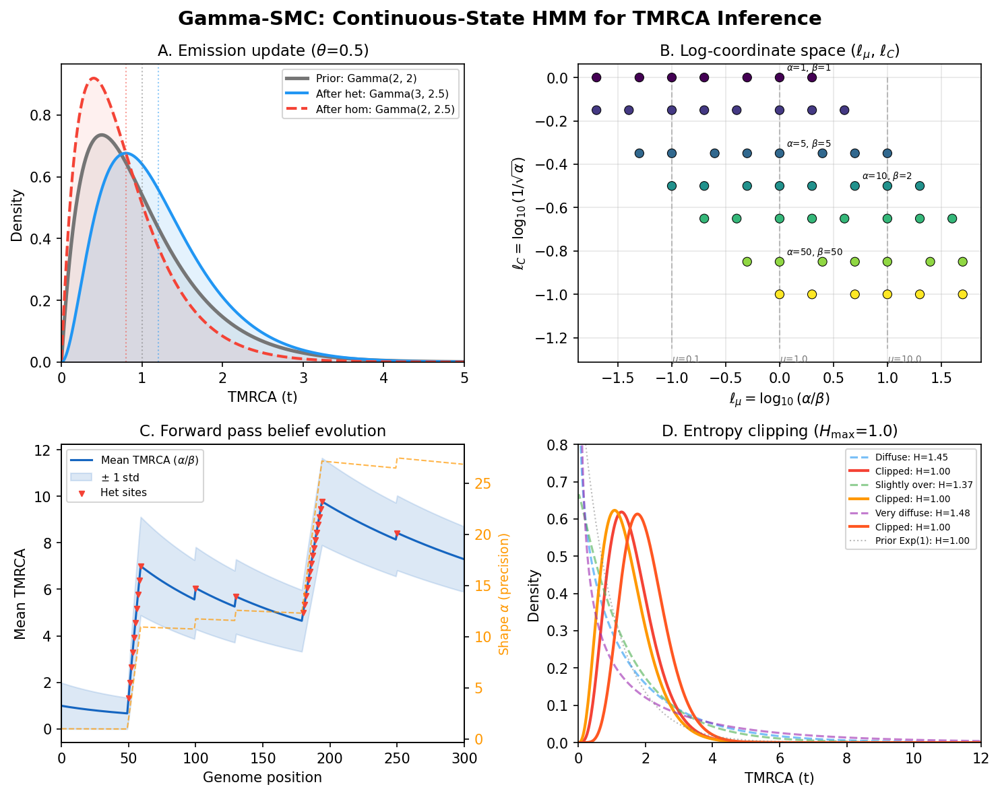

Overview of Gamma-SMC
Before assembling the watch, lay out every part and understand what it does.
{kind=link}

Gamma-SMC at a glance. A continuous-state HMM for ultrafast pairwise TMRCA inference: emission updates via Poisson-gamma conjugacy, the log-coordinate transformation that stabilises numerics, forward-pass belief evolution along the genome, and entropy clipping to prevent approximation drift.
Imagine a watchmaker who is tired of counting gear teeth. Every mechanical watch requires a discrete number of teeth on each gear – 60 for the seconds wheel, 12 for the hours. The teeth work, but they introduce a fundamental granularity: time advances in ticks, not in a smooth flow. The watchmaker asks: what if we could build a mechanism where time flows continuously, where the hands glide rather than tick?
Gamma-SMC is that mechanism. Where PSMC (Timepiece I) discretizes coalescence time into a finite set of intervals and builds a standard HMM with matrix multiplications, Gamma-SMC keeps time continuous and represents the posterior TMRCA at each position as a smooth curve – a gamma distribution. The result is a method that is simpler in its mathematics, faster in its computation, and free from the artifacts that come with choosing how many gear teeth to cut.
This chapter lays out every part of the Gamma-SMC mechanism on the bench. We will name each component, explain what it does, and show how the parts fit together into a working inference machine. The actual derivations happen in the chapters that follow.
What Does Gamma-SMC Do?
Given a pair of haplotypes (e.g., the two copies of a diploid genome), Gamma-SMC infers the posterior distribution of the TMRCA at each position along the genome.
where at each genomic position the observation is:
\(Y_i = 1\): heterozygous – the two haplotypes differ (a mutation occurred since the MRCA)
\(Y_i = 0\): homozygous – the two haplotypes are identical
\(Y_i = -1\): missing – the data is unavailable at this position (masked out or not called)
Unlike PSMC, Gamma-SMC does not estimate a demographic history \(N(t)\). It assumes a constant population size and provides the per-site TMRCA posterior under that assumption. The output is a set of gamma distribution parameters \((\alpha_i, \beta_i)\) at each position of interest, from which the user can extract point estimates (e.g., the posterior mean \(\alpha_i / \beta_i\)), credible intervals, or full posterior densities.
Terminology
Before going further, let us establish the notation used throughout the Gamma-SMC chapters. Many symbols are shared with the PSMC chapters; we note the differences where they arise.
Term |
Definition |
|---|---|
\(\mu\) |
Unscaled mutation rate, in mutations per base pair per generation. |
\(N_e\) |
Effective population size (number of diploids). |
\(\theta = 4 N_e \mu\) |
Scaled mutation rate. This is the Poisson rate of observing a heterozygous site given a TMRCA of \(t\) coalescent units: \(P(Y_i = 1 \mid X_i = t) \propto \theta t \cdot e^{-\theta t}\). |
\(r\) |
Unscaled recombination rate, in recombinations per base pair per generation. |
\(\rho = 4 N_e r\) |
Scaled recombination rate. Controls how frequently the genealogy changes between adjacent positions. |
\(X_i\) |
TMRCA at position \(i\), in coalescent time units (where unit time = \(2 N_e\) generations). This is the hidden state. |
\(Y_i\) |
Observation at position \(i\): 1 (het), 0 (hom), or -1 (missing). |
\(\text{Gamma}(\alpha, \beta)\) |
Gamma distribution with shape \(\alpha\) and rate \(\beta\). Mean is \(\alpha / \beta\), variance is \(\alpha / \beta^2\). |
\(f_{\alpha,\beta}(x)\) |
Probability density of \(\text{Gamma}(\alpha, \beta)\). |
\(\mu_\Gamma = \alpha / \beta\) |
Mean of the gamma distribution (not to be confused with the mutation rate \(\mu\)). |
\(C_V = 1 / \sqrt{\alpha}\) |
Coefficient of variation of the gamma distribution. Lower \(C_V\) means a more concentrated (more certain) posterior. |
\(l_\mu = \log_{10}(\mu_\Gamma)\) |
Log-mean coordinate on the flow field grid. |
\(l_C = \log_{10}(C_V)\) |
Log-CV coordinate on the flow field grid. |
\(\mathcal{F}\) |
The flow field: a mapping from \((\alpha, \beta)\) to \((\alpha', \beta')\) representing one SMC transition step. |
\(p(t \mid s)\) |
SMC transition density: the probability density of the TMRCA at the next position being \(t\), given that the current TMRCA is \(s\). Derived from the SMC’ model. |
The SMC’ Transition Model
Gamma-SMC uses the SMC’ model (Marjoram & Wall, 2006), the same model that underlies PSMC. At each genomic position, a recombination event may detach one lineage, which then re-coalesces – possibly onto the same branch (which the original SMC model of McVean & Cardin does not allow).
Under constant population size, the transition density conditioned on recombination is:
plus a point mass at \(t = s\) from the event where the detached lineage re-coalesces onto itself:
The full transition (marginalizing over whether recombination occurs) is:
where we use the small-\(\rho\) approximation \(P(\text{recomb} \mid X_i = s) \approx \rho s\) (see The Continuous-Time PSMC Model for a detailed derivation of similar formulas).
The Emission Model
The emission model is a Poisson process of mutations. Given a TMRCA of \(t\) coalescent units, the two lineages have total branch length \(t\) (in units of \(2N_e\) generations), and the number of mutations follows a Poisson distribution with rate \(\theta t\):
The last line says that missing observations carry no information – the emission probability is 1 regardless of the hidden state, so the emission step is simply skipped.
Why Poisson and not Bernoulli?
PSMC uses a Bernoulli emission model (\(P(\text{het}) = 1 - e^{-\theta t}\)) because it bins the genome into windows and asks “at least one mutation in this window?” Gamma-SMC works at single-site resolution and asks “how many mutations at this exact site?” Under the infinite-sites assumption (\(\theta \ll 1\)), the probability of more than one mutation at a single site is negligible, so the Poisson model effectively reduces to: het with probability \(\approx \theta t\), hom with probability \(\approx 1 - \theta t\). The Poisson form is used because it produces exact gamma conjugacy, as we will see in The Gamma Approximation.
The Data Flow
The complete Gamma-SMC pipeline consists of five stages:
Flow field precomputation (once, offline). Evaluate the SMC transition step over a grid of \((l_\mu, l_C)\) values, obtaining a vector field \(\mathcal{F}\) that maps gamma parameters through one transition. This step is independent of \(\theta\), \(\rho\), and the data.
Input processing. Read a VCF file and optional BED masks. For each pair of haplotypes, segment the genome into stretches of consecutive homozygous or missing sites, terminated by heterozygous sites.
Cache construction (per-parameter-set). For each element of the flow field grid and for each stretch length from 1 to a maximum cache size, precompute the result of repeatedly applying the flow field with homozygous or missing observations. This depends on \(\theta\) and \(\rho\).
Forward and backward passes. For each pair of haplotypes, sweep forward along the genome using cached lookups for long stretches and conjugate updates at heterozygous sites. Then sweep backward (= forward on the reversed sequence). Record the gamma parameters at output positions.
Posterior combination. At each output position, combine the forward and backward gamma approximations:
\[\text{Posterior: } \text{Gamma}(\alpha_\text{fwd} + \alpha_\text{bwd} - 1, \; \beta_\text{fwd} + \beta_\text{bwd} - 1)\]
Input and Output
Input. Gamma-SMC works on a VCF file containing genotypes for one or more samples. An optional BED file per sample describes the genomic mask – regions outside the mask are treated as missing. If all samples share the same mask, a single BED file suffices. The user provides:
Scaled mutation rate \(\theta\) (or it is estimated from the average heterozygosity across diploid pairs).
Scaled recombination rate \(\rho\) (or the recombination-to-mutation ratio \(\rho / \theta\)).
Output. For each pair of haplotypes and at each user-specified output position (either heterozygous sites, a regular grid, or both), Gamma-SMC outputs the posterior gamma approximation \((\alpha, \beta)\). From this, one can compute:
Posterior mean TMRCA: \(\alpha / \beta\)
Posterior mode TMRCA: \((\alpha - 1) / \beta\) (for \(\alpha > 1\))
Posterior variance: \(\alpha / \beta^2\)
Credible intervals: via the gamma quantile function
Ready to Build
You now have the high-level blueprint. Every part is laid out on the bench: the gamma distribution as the posterior representation, the flow field as the transition mechanism, the conjugate update as the emission step, and the caching system as the engineering that makes it all fast.
In the following chapters, we build each gear from scratch:
The Gamma Approximation – The Poisson-gamma conjugacy that makes emission updates exact, and the gamma projection that makes transition updates tractable. This is the escapement – the mathematical insight at the heart of the mechanism.
The Flow Field – The precomputed vector field that maps gamma parameters through one SMC transition step. This is the gear train – the machinery that transmits the transition dynamics.
The Forward-Backward CS-HMM – The continuous-state HMM forward and backward passes, and the formula for combining them into a full posterior. This is the mainspring – the engine that drives inference.
Segmentation and Caching – The segmentation strategy, cache construction, and entropy clipping that make Gamma-SMC fast and stable. This is the regulator – the practical engineering that keeps the mechanism running smoothly.
Each chapter derives the math, explains the intuition, and connects back to the SMC foundations from the prerequisites. Let us start with the foundation: the gamma approximation.